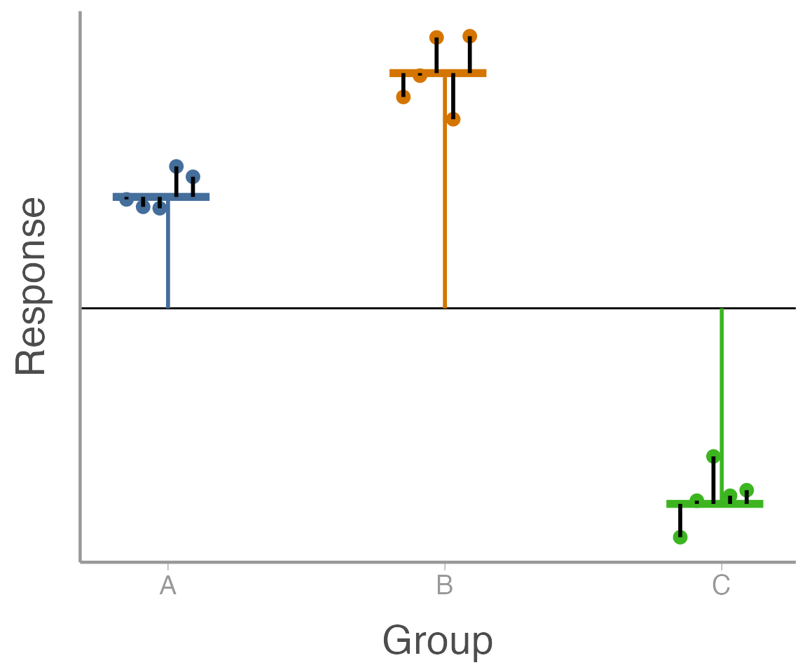
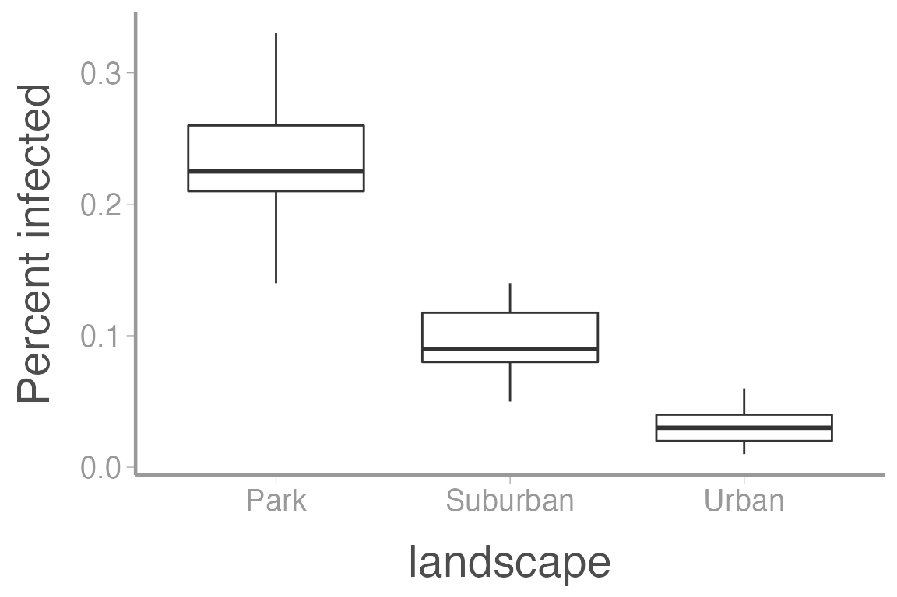
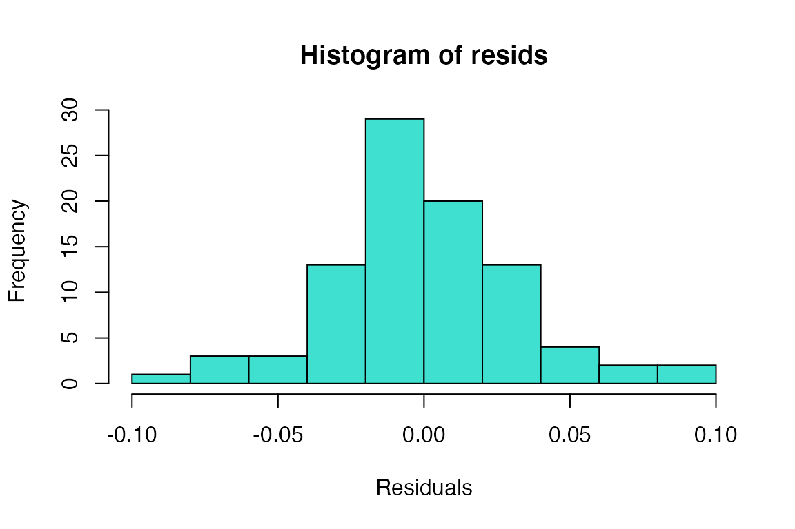
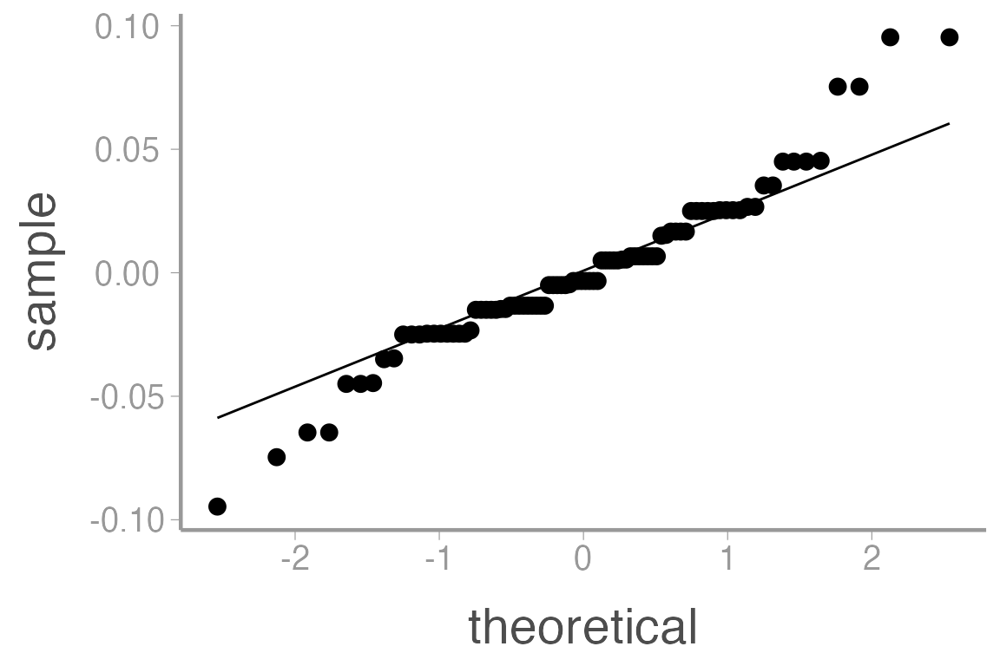
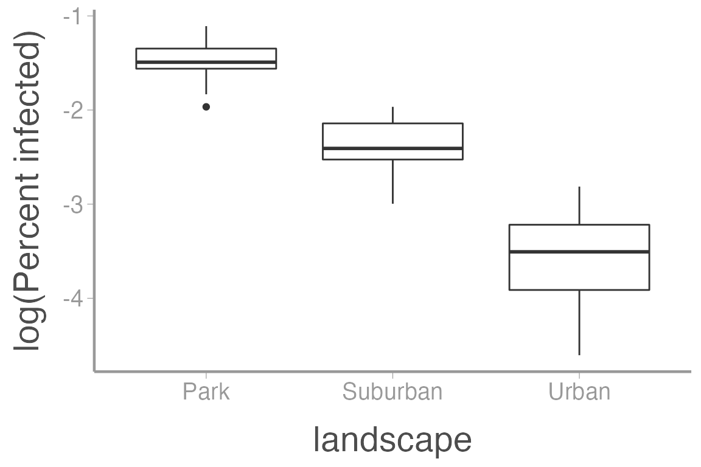
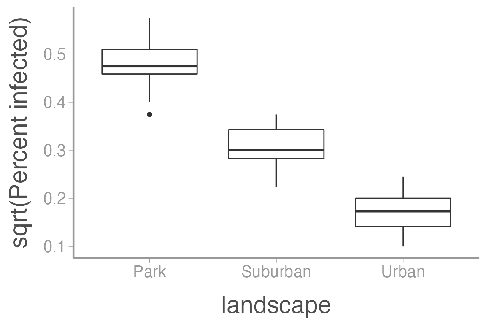
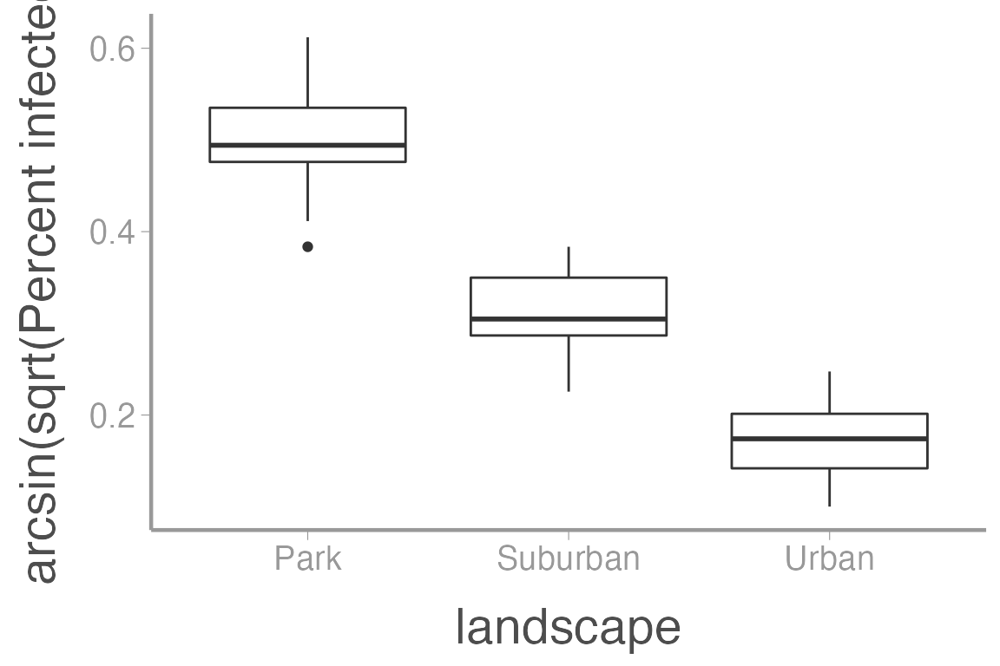
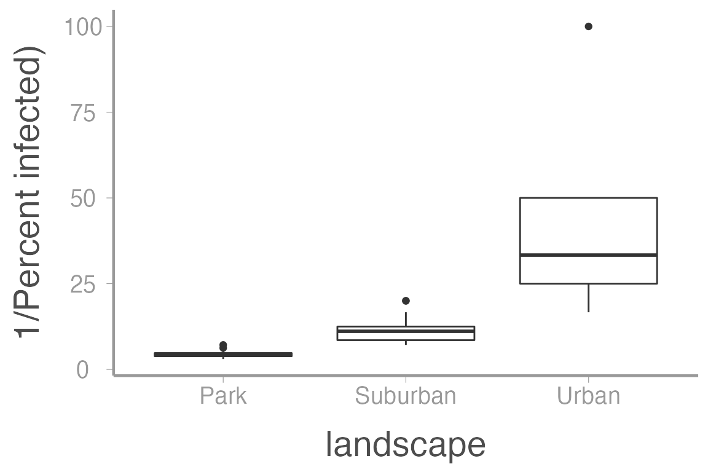

lab05_assump_nonpar.RmdAll models have assumptions and knowing what those assumptions are, and whether our data violate any of them, is crucial to the application and interpretation of statistical models.
Before we get to the assumptions of ANOVA models, it may help to re-parameterize the model a bit. Remember from lecture that we can write the ANOVA model as:
\[\Large y_{ij} = \mu + \alpha_i + \epsilon_{ij}\]
\[\Large \epsilon_{ij} \sim normal(0, \sigma^2)\]
where
\(\mu\) is the overall mean (the horiztonal black line the below figure);
\(\alpha_i\) is the difference between the overall mean and mean of group \(i\) (the vertical orange, blue, and green, lines in the below figure);
\(\epsilon_{ij}\) is the difference between observation \(y_{ij}\) and the mean of its group (also known as residual variation; the vertical black lines in the figure); and
\(\sigma^2\) is a measure of how far, on average, each observation is from its group mean (the avarge length of the black lines in the figure).
Note that this is exactly the same as the ANOVA model, we’ve just used some basic algebra to re-write it in different terms.

Let’s break down the above equations a bit further. First:
\[\Large E[y_{ij}] = \mu + \alpha_i\]
this says that the expected value of observation \(y_{ij}\) is \(\mu + \alpha_i\). That is, if we know what group an observation is from, this is our best guess at what value it will take. In the figure, this is the horizontal line (orange, blue, or green) for each group.
Next, we can re-write the model for observation \(y_{ij}\) as:
\[\Large y_{ij} \sim normal(E[y_{ij}], \sigma^2)\]
this says that the observations are normally distributed around the corresponding group means.
Now let’s look more specifically at the primary assumptions of this model:
Look at the equations above. Where does this assumption come from in the model?
What are some biological processes that may lead to data that violate this assumption?
Look at the equations above. Where does this assumption come from in the model?
What are some biological processes that may lead to data that violate this assumption?
What are some biological processes that may lead to data that violate this assumption?
library(FANR6750)
data("infectionRates")
str(infectionRates)
#> 'data.frame': 90 obs. of 2 variables:
#> $ percentInfected: num 0.21 0.25 0.17 0.26 0.21 0.21 0.22 0.27 0.23 0.14 ...
#> $ landscape : chr "Park" "Park" "Park" "Park" ...
summary(infectionRates)
#> percentInfected landscape
#> Min. :0.010 Length:90
#> 1st Qu.:0.040 Class :character
#> Median :0.090 Mode :character
#> Mean :0.121
#> 3rd Qu.:0.210
#> Max. :0.330These data are made-up, but imagine they come from a study in which 100 crows are placed in n = 30 enclosures in each of 3 landscapes. The response variable is the proportion of crows infected with West Nile virus at the end of the study.
anova1 <- aov(percentInfected ~ landscape, data = infectionRates)
summary(anova1)
#> Df Sum Sq Mean Sq F value Pr(>F)
#> landscape 2 0.638 0.319 306 <2e-16 ***
#> Residuals 87 0.091 0.001
#> ---
#> Signif. codes: 0 '***' 0.001 '**' 0.01 '*' 0.05 '.' 0.1 ' ' 1Significant, but did we meet the assumptions?
library(ggplot2)
ggplot(infectionRates, aes(x = landscape, y = percentInfected)) +
geom_boxplot() +
scale_y_continuous("Percent infected")
Notice that the variances don’t look equal among groups.
Histogram of residuals

QQ-plot of the residuals
ggplot(anova1, aes(sample = .resid)) +
geom_qq() +
geom_qq_line()
The histogram doesn’t look bad, but the QQ-plot suggests the smallest residuals are smaller than expected (below the QQ line) and the large residuals are bigger than expected (above the QQ line). We can also formally test the normality assumption using the Shapiro-Wilk test.
shapiro.test(resids)
#>
#> Shapiro-Wilk normality test
#>
#> data: resids
#> W = 0.96, p-value = 0.004We reject the null hypothesis that the residuals come from a normal distribution.
Clearly, we have violated both the normality and equality of variance assumptions. Since we failed to meet the key assumptions of ANOVA, we should consider transformations and/or non-parametric tests.
One way to move forward with our analysis when assumptions are violated is to transform the response data. In some cases, simple transformations can help us meet assumptions. Knowing which transformation to use in which context requires some experience, and we have to keep in mind that the interpretation of the model parameters changes a bit. However, a good “toolkit” of standard transformations can often get you pretty far, so let’s look at a few standard choices:
\[\Large y = log(u + C)\]
\(y\) is the transformed response variable
\(u\) is original response variable
The constant \(C\) is often 1 if there are zeros in the data
Useful when group variances are proportional to the means
Here’s what the infection rate data looks like when log transformed:
ggplot(infectionRates, aes(x = landscape, y = log(percentInfected))) +
geom_boxplot() +
scale_y_continuous("log(Percent infected)")
\[\Large y = \sqrt{u + C}\]
Useful when group variances are proportional to the means
Here’s what the infection rate data looks like when square root transformed:
ggplot(infectionRates, aes(x = landscape, y = sqrt(percentInfected))) +
geom_boxplot() +
scale_y_continuous("sqrt(Percent infected)")
\[\Large y = arcsin(\sqrt{u})\]
Used on proportions
Here’s what the infection rate data looks like when arcsine-square root transformed:
ggplot(infectionRates, aes(x = landscape, y = asin(sqrt(percentInfected)))) +
geom_boxplot() +
scale_y_continuous("arcsin(sqrt(Percent infected)")
\[\Large y = \frac{1}{u + C}\]
Useful when group SDs are proportional to the squared group means
Here’s what the infection rate data looks like when reciprocally transformed:
ggplot(infectionRates, aes(x = landscape, y = 1/(percentInfected))) +
geom_boxplot() +
scale_y_continuous("1/Percent infected)")
Transformation can be done in the aov formula:
anova2 <- aov(log(percentInfected) ~ landscape, data = infectionRates)
summary(anova2)
#> Df Sum Sq Mean Sq F value Pr(>F)
#> landscape 2 60.9 30.5 304 <2e-16 ***
#> Residuals 87 8.7 0.1
#> ---
#> Signif. codes: 0 '***' 0.001 '**' 0.01 '*' 0.05 '.' 0.1 ' ' 1The log transformation didn’t help much: We still reject the normality assumption
shapiro.test(resid(anova2))
#>
#> Shapiro-Wilk normality test
#>
#> data: resid(anova2)
#> W = 0.97, p-value = 0.04Occasionally, transformations will not be sufficient or appropriate for meeting the ANOVA assumptions. In this case, we can use models that do not make assumptions about the distribution on the residuals, termed non-parametric models.
One such test is the Wilcoxan rank sum test:
For 2 group comparisons (alternative to t-test)
a.k.a. the Mann-Whitney \(U\) test
Another is the Kruskal-Wallis One-Way ANOVA
For testing differences in > 2 groups
These two functions can be used in almost the exact same way as t.test() and aov(), respectively.
Create an R Markdown file to do the following:
R chunk to load the data using:infectionRates data by conducting ANOVAs using the log, square-root, arcsine square-root, and reciprocal transformations. Use boxplots, histograms, and Shapiro’s tests to determine the best transformation.Within this section, use subheaders to delineate different transformations. At this point in the semester, your figures should be starting to look more professional so take time to make them look nice and include captions (see fig.caption chunk option). Also include a subheader within which you write a short conclusion about which transformation you think is best for these data.
Within the section with your conclusion about which transformation to use, discuss whether the transformation alters the conclusion about the null hypothesis of no difference in means? If not, were the transformations necessary?
Create a header called “Do infection rates differ between suburban and urban areas?” In this section, test the hypothesis that infection rates are equal between suburban and urban landscapes using a Wilcoxan rank sum test. What is the conclusion?
Create a header called “Non-parametric test”. In this section, conduct a Kruskal-Wallis test on the data. What is the conclusion? Explain your answers.
A few things to remember when creating the assignment:
Be sure the output type is set to: output: html_document
Title the document: title: "Lab 5 assignment"
Be sure to include your first and last name in the author section
Be sure to set echo = TRUE in all R chunks so we can see both your code and the output
Please upload both the html and .Rmd files when you submit your assignment
See the R Markdown reference sheet for help with creating R chunks, equations, tables, etc.